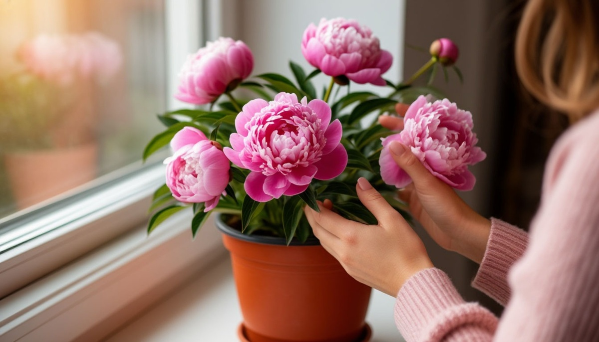

Пион — цветок, который в Китае называют «императорским». И на это есть причины. Он цветет всего пару недель, но за это время успевает превратиться из плотного зеленого шарика в огромный, тяжелый от лепестков цветок. И вот эта короткая, но яркая жизнь сделала пион символом богатства, чести и быстротечного счастья.
Разберемся, откуда пришла символика пиона, что он значит в подарке и почему в некоторых культурах его боятся дарить.
Откуда пришел пион
Родиной пиона считается Китай. Там его начали выращивать более двух тысяч лет назад, причем сначала как лекарственное растение. Но очень быстро пион стал частью императорских садов.
В Китае пион — это «цветок императоров». Его изображали на шелке, фарфоре, в росписях дворцов. Он означал богатство, процветание и высокий статус. Простым людям долгое время запрещалось выращивать некоторые сорта — они предназначались только для знати.
В Японии пион получил другое значение. Там он стал символом мужества и отваги. Его связывали с самураями, потому что пион может выдержать сильный ветер и не сломаться.
В Европу пион попал позже, и здесь его воспринимали просто как красивый садовый цветок. Но восточная символика никуда не делась — она живет в языке цветов до сих пор.
Что означает пион в подарке
Символика пиона зависит от цвета и от контекста.
Красный или розовый пион. Это самый популярный вариант для подарка. Он означает страсть, любовь и искреннюю привязанность. В Китае красный пион — это пожелание счастливой жизни и богатства. В России его часто дарят на свиданиях или на годовщину.
Белый пион. Чистота, невинность, начало. Хорошо подходит для свадьбы или для подарка юной девушке. Но в некоторых культурах белый цвет может читаться как траур, поэтому лучше уточнить.
Желтый пион. В Европе — это радость и солнечное настроение. Но в России к желтым цветам относятся с осторожностью (вспомним желтые розы). Поэтому желтый пион лучше дарить тем, кто не суеверен.
Фиолетовый пион. Уважение, восхищение, иногда — тайна. Хорош для старшего поколения или для коллеги, к которому вы испытываете уважение.
Приметы, связанные с пионом
Пион — цветок, который в народной традиции считается «денежным». И это породило несколько примет.
Пион в доме. Считается, что пион приносит в дом богатство и удачу. Если он зацвел в саду — к процветанию. Если завял — к неприятностям, но не критичным.
Пион в подарок. Дарить пион — значит желать человеку благополучия и достатка. Но есть нюанс: если вы дарите срезанные цветы, они быстро вянут. В народе это связывали с быстротечностью счастья. Поэтому некоторые предпочитают дарить пион в горшке — он будет цвести каждый год.
Пион и деньги. В Китае пион часто изображают рядом с монетами или другими символами богатства. Если вы дарите пион, можно добавить к нему монетку — это усилит «денежное» значение.

Кому дарить пион и когда
Девушке или жене. На свидание, на годовщину, на день рождения. Красный или розовый пион — это сильный романтический жест.
Маме или бабушке. На день рождения, на 8 марта. Лучше выбрать розовый или белый. Пион в горшке — практичный и долговечный подарок.
Коллеге или начальнику. На повышение, на юбилей. Фиолетовый или белый пион. Спокойные тона, без романтики.
На свадьбу. Белый или розовый пион в букете невесты. Очень популярный вариант, особенно в сочетании с розами.
На новоселье. Пион в горшке как пожелание богатства и уюта в новом доме.
Что не стоит делать
Не дарите пион, который уже начал вянуть. Он не доживет до конца вечера и испортит впечатление.
Не дарите четное число. Как и с любыми цветами, четное число в России — только на кладбище. Для живых — нечетное.
Не дарите пион человеку, который не любит крупные цветы. Пион огромный и тяжелый, он может не поместиться в вазу и просто раздражать.
Не дарите белый пион, если не знаете отношения человека. В некоторых культурах это траурный цвет.
Что сказать, когда вручаете
Пион требует слов. Без объяснения он может быть прочитан не так, как вы хотели.
«Этот пион — про богатство. Пусть у тебя все будет».
«Красный пион — это моя любовь. Он такой же яркий, как ты».
«Белый — это чистота и начало. Пусть у тебя будет новый хороший этап».
«Пион в горшке — чтобы цвел каждый год. Как моя память о тебе».
Одна фраза — и пион перестает быть просто цветком. Он становится посланием.
По итогу
Пион — цветок с очень сильной энергетикой. В Китае он символ императорской власти, в Японии — мужества, в России — богатства и любви. Один и тот же цветок, но разные контексты читаются по-разному.
Но если отвлечься от символики, пион просто красивый. Огромный, тяжелый, пахнущий. И если вы дарите его с добрыми словами, он скажет за вас то, что вы не решитесь произнести.
Моя знакомая однажды получила от мужа букет пионов. Он сказал: «Они такие же огромные, как моя любовь к тебе». Она смеялась, но букет стоял у нее на столе до последнего лепестка. И когда он завял, она не выбросила его сразу. Оставила сушиться. Потому что это была не просто вещь. Это были его слова.